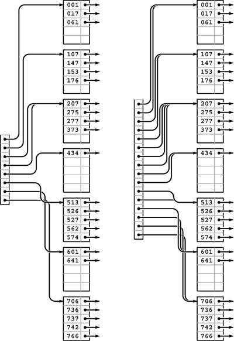
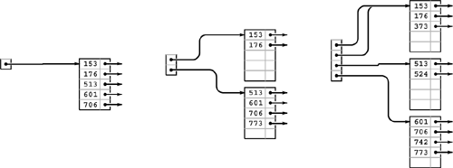
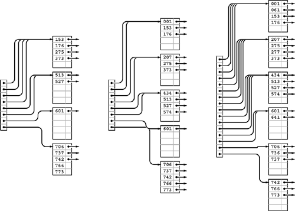
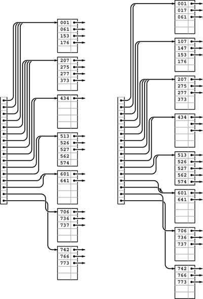

C++ Programming Robert Sedgewick - Princeton University Addison Wesley Professional Algorithms in C++, Parts 1–4: Fundamentals, Data Structure, Sorting, Searching, Third Edition
16.4. Extendible Hashing
An alternative to B trees that extends digital searching algorithms to apply to external searching was developed in 1978 by Fagin, Nievergelt, Pippenger, and Strong. Their method, called extendible hashing, leads to a search implementation that requires just one or two probes for typical applications. The corresponding insert implementation also (almost always) requires just one or two probes.
Extendible hashing combines features of hashing, multiway-trie algorithms, and sequential-access methods. Like the hashing methods of Chapter 14, extendible hashing is a randomized algorithm—the first step is to define a hash function that transforms keys into integers (see Section 14.1). For simplicity, in this section, we simply consider keys to be random fixed-length bitstrings. Like the multiway-trie algorithms of Chapter 15, extendible hashing begins a search by using the leading bits of the keys to index into a table whose size is a power of 2. Like B-tree algorithms, extendible hashing stores items on pages that are split into two pieces when they fill up. Like indexed sequential-access methods, extendible hashing maintains a directory that tells us where we can find the page containing the items that match the search key. The blending of these familiar features in one algorithm makes extendible hashing a fitting conclusion to our study of search algorithms.
Suppose that the number of disk pages that we have available is a power of 2—say 2d. Then, we can maintain a directory of the 2d different page references, use d bits of the keys to index into the directory, and can keep, on the same page, all keys that match in their first k bits, as illustrated in Figure 16.10. As we do with B trees, we keep the items in order on the pages, and do sequential search once we reach the page corresponding to an item with a given search key.
With a directory of eight entries, we can store up to 40 keys by storing all records whose first 3 bits match on the same page, which we can access via a pointer stored in the directory (left). Directory entry 0 contains a pointer to the page that contains all keys that begin with 000; table entry 1 contains a pointer to the page that contains all keys that begin with 001; table entry 2 contains a pointer to the page that contains all keys that begin with 010, and so forth. If some pages are not fully populated, we can reduce the number of pages required by having multiple directory pointers to a page. In this example (left), 373 is on the same page as the keys that start with 2; that page is defined to be the page that contains items with keys whose first 2 bits are 01. If we double the size of the directory and clone each pointer, we get a structure that we can index with the first 4 bits of the search key (right). For example, the final page is still defined to be the page that contains items with keys whose first three bits are 111, and it will be accessed through the directory if the first 4 bits of the search key are 1110 or 1111. This larger directory can accommodate growth in the table.

Figure 16.10 illustrates the two basic concepts behind extendible hashing. First, we do not necessarily need to maintain 2d pages. That is, we can arrange to have multiple directory entries refer to the same page, without changing our ability to search the structure quickly, by combining keys with differing values for their leading d bits together on the same page, while still maintaining our ability to find the page containing a given key by using the leading bits of the key to index into the directory. Second, we can double the size of the directory to increase the capacity of the table.
Program 16.5. Extendible hashing data structures|
An extendible hash table is a directory of references to pages (like the external nodes in B trees) that contain up to 2M items. Each page also contains a count (m) of the number of items on the page, and an integer (k) that specifies the number of leading bits for which we know the keys of the items to be identical. As usual, N specifies the number of items in the table. The variable d specifies the number of bits that we use to index into the directory, and D is the number of directory entries, so D = 2d. The table is initially set to a directory of size 1, which points to an empty page.
template <class Item,
class Key> class ST
{
private:
struct node
{ int m; Item b[M]; int k;
node() { m = 0; k = 0; }
};
typedef node *link;
link* dir;
Item nullItem;
int N, d, D;
public:
ST(int maxN)
{ N = 0; d = 0; D = 1;
dir = new link[D];
dir[0] = new node;
}
};
|
Specifically, the data structure that we use for extendible hashing is much simpler than the one that we used for B trees. It consists of pages that contain up to M items, and a directory of 2d pointers to pages (see Program 16.5). The pointer in directory location x refers to the page that contains all items whose leading d bits are equal to x. The table is constructed with d sufficiently large that we are guaranteed that there are less than M items on each page. The implementation of search is simple: We use the leading d bits of the key to index into the directory, which gives us access to the page that contains any items with matching keys, then do sequential search for such an item on that page (see Program 16.6).
Program 16.6. Extendible hashing search|
Searching in an extendible hashing table is simply a matter of using the leading bits of the key to index into the directory, then doing a sequential search on the specified page for an item with a key equal to the search key. The only requirement is that each directory entry refer to a page that is guaranteed to contain all items in the symbol table that begin with the specified bits.
private:
Item search(link h, Key v)
{
for (int j = 0; j < h->m; j++)
if (v == h->b[j].key()) return h->b[j];
return nullItem;
}
public:
Item search(Key v)
{ return search(dir[bits(v, 0, d)], v); }
|
The data structure needs to become slightly more complicated to support insert, but one of its essential features is that this search algorithm works properly without any modification. To support insert, we need to address the following questions:
|  What do we do when the number of items that belong on a page exceeds that page's capacity? What do we do when the number of items that belong on a page exceeds that page's capacity?
| | What directory size should we use? |
For example, we could not use d = 2 in the example in Figure 16.10 because some pages would overflow, and we would not use d = 5 because too many pages would be empty. As usual, we are most interested in supporting the insert operation for the symbol-table ADT, so that, for example, the structure can grow gradually as we do a series of intermixed search and insert operations. Taking this point of view corresponds to refining our first question:
| What do we dowhen we need to insert an item into a full page? For example, we could not insert an item whose key starts with a 5 or a 7 in the example in Figure 16.10 because the corresponding pages are full. |
Definition 16.3. An extendible hash table of order d is a directory of 2d references to pages that contain up to M items with keys. The items on each page are identical in their first k bits, and the directory contains 2d-k pointers to the page, starting at the location specified by the leading k bits in the keys on the page|
Some d-bit patterns may not appear in any keys. We leave the corresponding directory entries unspecified in Definition 16.3, although there is a natural way to organize pointers to null pages; we will examine it shortly.
To maintain these characteristics as the table grows, we use two basic operations: a page split, where we distribute some of the keys from a full page onto another page; and a directory split, where we double the size of the directory and increase d by 1. Specifically, when a page fills, we split it into two pages, using the leftmost bit position for which the keys differ to decide which items go to the new page. When a page splits, we adjust the directory pointers appropriately, doubling the size of the directory if necessary.
As usual, the best way to understand the algorithm is to trace through its operation as we insert a set of keys into an initially empty table. Each of the situations that the algorithm must address occurs early in the process, in a simple form, and we soon come to a realization of the algorithm's underlying principles. Figures 16.11 through 16.13 show the construction of an extendible hash table for the sample set of 25 octal keys that we have been considering in this chapter. As occurs in B trees, most of the insertions are uneventful: They simply add a key to a page. Since we start with one page and end up with eight pages, we can infer that seven of the insertions caused a page split; since we start with a directory of size 1 and end up with a directory of size 16, we can infer that four of the insertions caused a directory split.
As in B trees, the first five insertions into an extendible hash table go into a single page (left). Then, when we insert 773, we split into two pages (one with all the keys beginning with a 0 bit and one with all the keys beginning with a 1 bit) and double the size of the directory to hold one pointer to each of the pages (center). We insert 742 into the bottom page (because it begins with a 1 bit) and 373 into the top page (because it begins with a 0 bit), but we then need to split the bottom page to accommodate 524. For this split, we put all the items with keys that begin with 10 on one page and all the items with keys that begin with 11 on the other, and we again double the size of the directory to accommodate pointers to both of these pages (right). The directory contains two pointers to the page containing items with keys starting with a 0 bit: one for keys that begin with 00 and the other for keys that begin with 01. 
|
We insert the keys 766 and 275 into the rightmost B tree in Figure 16.11 without any node splits (left). Then, when we insert 737, the bottom page splits, and that, because there is only one link to the bottom page, causes a directory split (center). Then, we insert 574, 434, 641, and 207 before 001 causes the top page to split (right). 
Continuing the example in Figures 16.11 and 16.12, we insert the 5 keys 526, 562, 017, 107, and 147 into the rightmost B tree in Figure 16.6 Node splits occur when we insert 526 (left) and 107 (right).

|
Property 16.4. The extendible hash table built from a set of keys depends on only the values of those keys, and does not depend on the order in which the keys are inserted|
Consider the trie corresponding to the keys (see Property 15.2), with each internal node labeled with the number of items in its subtree. An internal node corresponds to a page in the extendible hash table if and only if its label is less than M and its parent's label is not less than M. All the items below the node go on that page. If a node is at level k, it corresponds to a k-bit pattern derived from the trie path in the normal way, and all entries in the extendible hash table's directory with indices that begin with that k-bit pattern contain pointers to the corresponding page. The size of the directory is determined by the deepest level among all the internal nodes in the trie that correspond to pages. Thus, we can convert a trie to an extendible hash table without regard to the order in which items are inserted, and this property holds as a consequence of Property 15.2
|
Program 16.7 is an implementation of the insert operation for an extendible hash table. First, we access the page that could contain the search key, with a single reference to the directory, as we did for search. Then, we insert the new item there, as we did for external nodes in B trees (see Program 16.2). If this insertion leaves M items in the node, then we invoke a split function, again as we did for B trees, but the split function is more complicated in this case. Each page contains the number k of leading bits that we know to be the same in the keys of all the items on the page, and, because we number bits from the left starting at 0, k also specifies the index of the bit that we want to test to determine how to split the items.
Therefore, to split a page, we make a new page, then put all the items for which that bit is 0 on the old page and all the items for which that bit is 1 on the new page, then set the bit count to k + 1 for both pages. Now, it could be the case that all the keys have the same value for bit k, which would still leave us with a full node. If so, we simply go on to the next bit, continuing until we get a least one item in each page. The process must terminate, eventually, unless we have M values of the same key. We discuss that case shortly.
As with B trees, we leave space for an extra entry in every page to allow splitting after insertion, thus simplifying the code. Again, this technique has little practical effect, and we can ignore the effect in the analysis.
Program 16.7. Extendible hashing insertion|
To insert an item into an extendible hash table, we search; then we insert the item on the specified page; then we split the page if the insertion caused overflow. The general scheme is the same as that for B trees, but the search and split algorithms are different. The split function creates a new node, then examines the kth bit (counting from the left) of each item's key: if the bit is 0, the item stays in the old node; if it is 1, it goes in the new node. The value k + 1 is assigned to the "leading bits known to be identical" field of both nodes after the split. If this process does not result in at least one key in each node, we split again, until the items are so separated. At the end, we insert the pointer with the new node into the directory.
private:
void split(link h)
{ link t = new node;
while (h->m == 0 || h->m == M)
{
h->m = t->m = 0;
for (int j = 0; j < M; j++)
if (bits(h->b[j].key(), h->k, 1) == 0)
h->b[h->m++] = h->b[j];
else t->b[t->m++] = h->b[j];
t->k = ++(h->k);
}
insertDIR(t, t->k);
}
void insert(link h, Item x)
{ int j; Key v = x.key();
for (j = 0; j < h->m; j++)
if (v < h->b[j].key()) break;
for (int i = (h->m)++; i > j; i--)
h->b[i] = h->b[i-1];
h->b[j] = x;
if (h->m == M) split(h);
}
public:
void insert(Item x)
{ insert(dir[bits(x.key(), 0, d), x); }
|
Program 16.8. Extendible-hashing directory insertion|
This deceptively simple code is at the heart of the extendible-hashing process. We are given a link t to a node that carries items that match in the first k bits, which is to be incorporated into the directory. In the simplest case, where d and k are equal, we just put t into d[x], where x is the value of the first d bits of t->b[0] (and of all the other items on the page). If k is greater than d, we have to double the size of the directory, until reducing to the case where d and k are equal. If k is less than d, we need to set more than one pointer—the first for loop calculates the number of pointers that we need to set (2d - k), and the second for loop does the job.
void insertDIR(link t, int k)
{ int i, m, x = bits(t->b[0].key(), 0, k);
while (d < k)
{ link *old = dir;
d += 1; D += D;
dir = new link[D];
for (i = 0; i < D; i++) dir[i] = old[i/2];
if (d < k) dir[bits(x, 0, d)^1] = new node;
}
for (m = 1; k < d; k++) m *= 2;
for (i = 0; i < m; i++) dir[x*m+i] = t;
}
|
When we create a new page, we have to insert a pointer to it in the directory. The code that accomplishes this insertion is given in Program 16.8. The simplest case to consider is the one where the directory, prior to insertion, has precisely two pointers to the page that splits. In that case, we need simply to arrange to set the second pointer to reference the new page. If the number of bits k that we need to distinguish the keys on the new page is greater than the number of bits d that we have to access the directory, then we have to increase the size of the directory to accommodate the new entry. Finally, we update the directory pointers as appropriate.
If more than M items have duplicate keys, the table overflows, and the code in Program 16.7 goes into an infinite loop, looking for a way to distinguish the keys. A related problem is that the directory may get unnecessarily huge, if the keys have an excessive number of leading bits that are equal. This situation is akin to the excessive time required for MSD radix sort, for files that have large numbers of duplicate keys or long stretches of bit positions where they are identical. We depend on the randomization provided by the hash function to stave off these problems (see Exercise 16.43). Even with hashing, extraordinary steps must be taken if large numbers of duplicate keys are present, because hash functions take equal keys to equal hash values. Duplicate keys can make the directory artificially large; and the algorithm breaks down entirely if there are more equal keys than fit in one page. Therefore, we need to add tests to guard against the occurrence of these conditions before using this code (see Exercise 16.35).
The primary performance parameters of interest are the number of pages used (as with B trees) and the size of the directory. The randomization for this algorithm is provided by the hash functions, so average-case performance results apply to any sequence of N distinct insertions.
Property 16.5. With pages that can hold M items, extendible hashing requires about 1.44(N/M) pages for a file of N items, on the average. The expected number of entries in the directory is about 3.92(N1/M)(N/M)|
This (rather deep) result extends the analysis of tries that we discussed briefly in the previous chapter (see reference section). The exact constants are lge = 1/ln2 for the number of pages and elge = e/ln 2 for the directory size, though the precise values of the quantities oscillate around these average values. We should not be surprised by this phenomenon because, for example, the directory size has to be a power of 2, a fact which has to be accounted for in the result.
|
Note that the growth rate of the directory size is faster than linear in N, particularly for small M. However, for N and M in ranges of practical interest, N1/M is quite close to 1, so we can expect the directory to have about 4(N/M) entries, in practice.
We have considered the directory to be a single array of pointers. We can keep the directory in memory, or, if it is too big, we can keep a root node in memory that tells where the directory pages are, using the same indexing scheme. Alternatively, we can add another level, indexing the first level on the first 10 bits (say), and the second level on the rest of the bits (see Exercise 16.36).
As we did for B trees, we leave the implementation of other symbol-table operations for exercises (see Exercises 16.38 and 16.41). Also as it is with B trees, a proper remove implementation is a challenge, but allowing underfull pages is an easy alternative that can be effective in many practical situations.
Exercises |
 16.27 How many pages would be empty if we were to use a directory of size 32 in Figure 16.10?
16.27 How many pages would be empty if we were to use a directory of size 32 in Figure 16.10? | | 16.28 Draw figures corresponding to Figures 16.11 through 16.13, to illustrate the process of inserting the keys 562, 221, 240, 771, 274, 233, 401, 273, and 201 in that order into an initially empty tree, with M = 5. | |
 16.29 Draw figures corresponding to Figures 16.11 through 16.13, to illustrate the process of inserting the keys 562, 221, 240, 771, 274, 233, 401, 273, and 201 in that order into an initially empty tree, with M = 5.
16.29 Draw figures corresponding to Figures 16.11 through 16.13, to illustrate the process of inserting the keys 562, 221, 240, 771, 274, 233, 401, 273, and 201 in that order into an initially empty tree, with M = 5. | |
16.30 Assume that you are given an array of items in sorted order. Describe how you would determine the directory size of the extendible hash table corresponding to that set of items. | |
16.31 Write a program that constructs an extendible hash table from an array of items that is in sorted order, by doing two passes through the items: one to determine the size of the directory (see Exercise 16.30) and one to allocate the items to pages and fill in the directory. | |
16.32 Give a set of keys for which the corresponding extendible hash table has directory size 16, with eight pointers to a single page. | |
 16.33 Create a figure like Figure 16.8 for extendible hashing.
16.33 Create a figure like Figure 16.8 for extendible hashing. | |
16.34 Write a program to compute the average number of external pages and the average directory size for an extendible hash table built from N random insertions into an initially empty tree, when the page capacity is M. Compute the percentage of empty space, for M = 10, 100, and 1000 and N = 103, 104, 105, and 106. | | 16.35 Add appropriate tests to Program 16.7 to guard against malfunction in case too many duplicate keys or keys with too many leading equal bits are inserted into the table. | | 16.36 Modify the extendible-hashing implementation in Programs 16.5through 16.7 to use a two-level directory, with no more than M pointers per directory node. Pay particular attention to deciding what to do when the directory first grows from one level to two. | | 16.37 Modify the extendible-hashing implementation in Programs 16.5 through 16.7 to allow M items per page to exist in the data structure. | | 16.38 Implement the sort operation for an extendible hash table. | | | | 16.39 Implement the select operation for an extendible hash table. | | 16.40 Implement the remove operation for an extendible hash table. | | 16.41 Implement the remove operation for an extendible hash table, using the method indicated in Exercise 16.25. | | 16.42 Develop a version of extendible hashing that splits pages when splitting the directory, so that each directory pointer points to a unique page. Develop experiments to compare the performance of your implementation to that of the standard implementation. | | 16.43 Run empirical studies to determine the number of random numbers that we would expect to generate before finding more than M numbers with the same d initial bits, for M = 10, 100, and 1000, and for 1  d 20. d 20. | | 16.44 Modify hashing with separate chaining (Program 14.3) to use a hash table of size 2M, and keep items in pages of size 2M. That is, when a page fills, link it to a new empty page, so each hash table entry points to a linked list of pages. Empirically determine the average number of probes required for a search after building a table from N items with random keys, for M = 10, 100, and 1000 and N = 103, 104, 105, and 106. | | 16.45 Modify double hashing (Program 14.6) to use pages of size 2M, treating accesses to full pages as "collisions." Empirically determine the average number of probes required for a search after building a table from N items with random keys, for M = 10, 100, and 1000 and N = 103, 104, 105, and 106, using an initial table size of 3N/2M. |
|